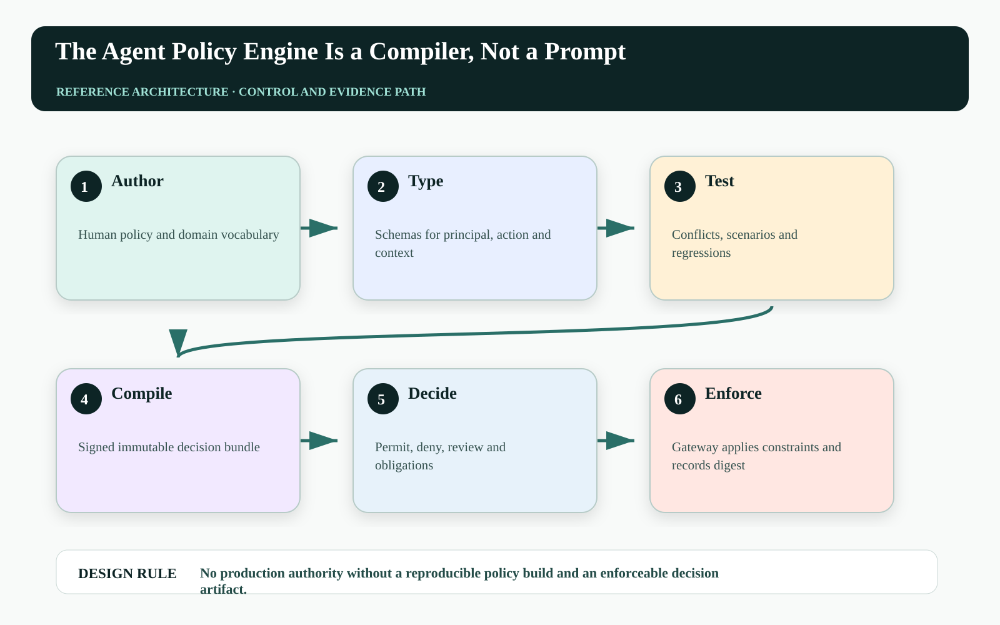
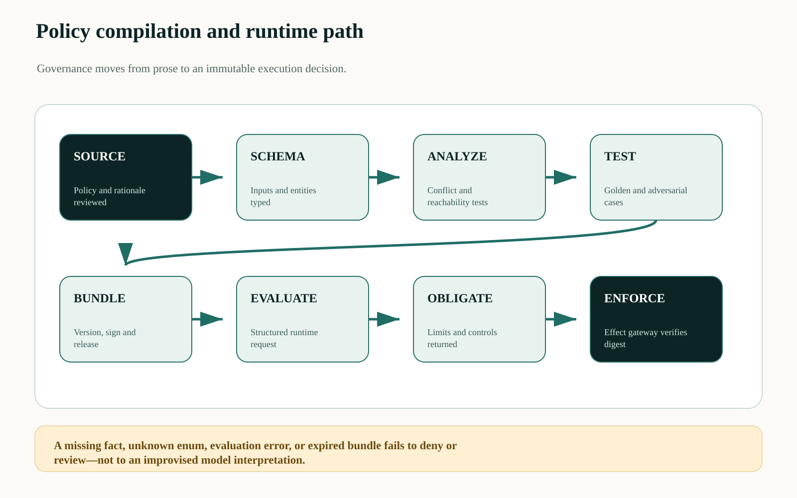
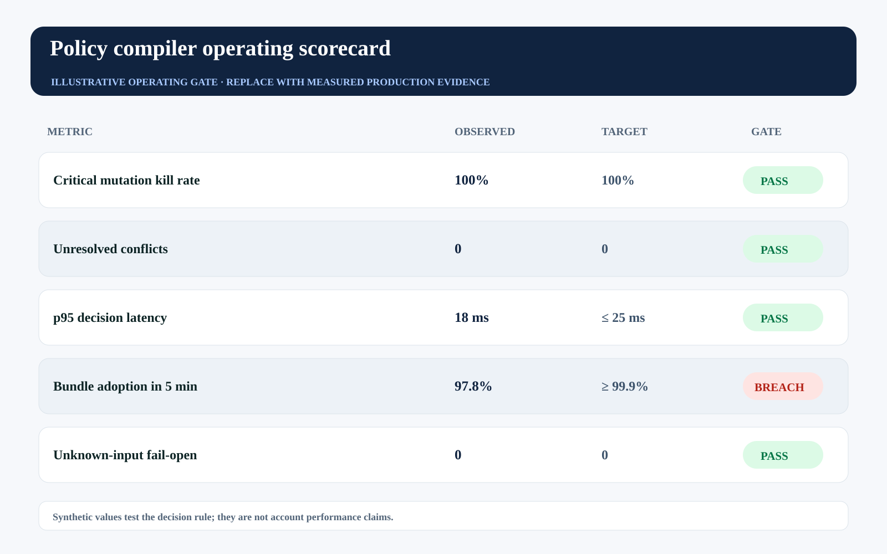

This story was developed with AI writing and visualization assistance. All incidents, thresholds, workloads, and operating values are illustrative unless a source is explicitly cited.
‘Do not offer excessive discounts’ sounds like a policy until two teams implement ‘excessive’ differently. One prompt treats 12% as high, another compares it with account value, and a third never receives the regional exception table.
Natural-language policy is necessary for accountability, but it is not an execution format. Production control needs a compilation pipeline that resolves vocabulary, types inputs, detects conflicts, emits deterministic decisions and obligations, and packages the result for enforcement.
The model may explain policy. The policy engine must decide authority from structured facts and a versioned executable artifact.

Prompt-level governance has no stable semantics#
Policies fail when terms are undefined, inputs are missing, precedence is implicit, or two rules permit and forbid the same effect. A language model can produce a plausible interpretation without proving which clause, data version, exception, or conflict rule determined the outcome.
Treating policy as a compiler problem creates explicit stages: parse, type-check, link data, resolve precedence, evaluate tests, optimize, sign, distribute, and enforce. A rejected build is safer than a syntactically fluent ambiguity reaching a tool call.
Build a policy supply chain#
Policy authors work in a governed source repository. Schemas define principals, actions, resources, context, evidence, risk classes, and obligations. Continuous integration runs type checks, conflict analysis, unit tests, scenario tests, and differential tests against the current bundle.
The released bundle receives a digest and effective interval. At runtime the decision point returns permit, deny, or review plus obligations such as maximum value, required approver class, verifier level, lease duration, and receipt retention. Enforcement points reject missing or stale bundle digests.

Treat coverage like a compiler quality problem#
A deployment gate can combine policy test evidence without pretending all tests are equally important:
Coverage_risk = Σ_i w_i × pass_i / Σ_i w_i
Conflict_escape = conflicts_found_after_release / policy_decisions
release iff Coverage_risk ≥ τ ∧ Conflict_escape = 0 ∧ breaking_schema_changes = 0Weights represent action consequence and rule criticality. Mutation testing—deliberately changing limits or removing forbids—helps reveal suites that pass without actually protecting the intended boundary.
| Compiler stage | Artifact | Hard failure |
|---|---|---|
| Schema | Typed entity/action model | Unknown or incompatible field |
| Analysis | Conflict and reachability report | Unresolved forbid/permit overlap |
| Testing | Risk-weighted scenario results | Critical mutation survives |
| Release | Signed bundle + digest | Unsigned or expired artifact |
| Runtime | Decision + obligations | Enforcement cannot prove bundle |
Return obligations, not only a boolean#
An action decision needs enough structure for downstream enforcement:
{
"decision": "review",
"policy_bundle": "pricing-2026.09.3",
"digest": "sha256:...",
"determining_rules": ["discount.material", "region.apac"],
"obligations": {
"max_discount_bps": 800,
"approver_role": "regional_vp",
"lease_seconds": 90,
"verification": "independent_high"
}
}The gateway must enforce these obligations even if the planner asks for more. Diagnostics should be visible to policy owners and receipts, while sensitive policy data is minimized for the agent.
Run policy as a production dependency#
Track decision latency, unknown-input rate, deny/review drift, policy rollback frequency, critical test coverage, bundle adoption lag, and post-release conflict escapes. Changes to policy can alter authority as materially as application code.
The synthetic gate shows a bundle-adoption breach: decision quality can pass in the control plane while stale enforcement points continue applying old authority.

| Operating signal | Decision use | Failure interpretation |
|---|---|---|
| Bundle adoption lag | Block or constrain writes on stale points | Control plane and enforcement disagree |
| Unknown-input rate | Repair schemas or producers | Runtime context is incomplete |
| Decision drift | Review policy/data change | Authority distribution shifted unexpectedly |
| Conflict escape | Incident and rollback | Compiler or review gate missed ambiguity |
Failure-injection before production#
A design review cannot prove No production authority without a reproducible policy build and an enforceable decision artifact. The pre-production harness must interrupt the system at the transitions where ownership, authority, evidence, and business state can disagree. The objective is not to maximize a generic pass rate. It is to demonstrate that every material fault produces a bounded state, a named owner, and an admissible recovery transition.
| Injected fault | Experiment | Required evidence |
|---|---|---|
| Delayed or reordered work | Pause the path after SCHEMA and release it after BUNDLE | The stale path cannot manufacture terminal success |
| Authority becomes stale | Advance policy, mode, ownership, or resource version before effect commit | The final gateway rejects the old decision context |
| Evidence is missing or corrupted | Remove one authoritative observation or change its digest | The outcome remains violated, inconclusive, or owned—never guessed |
| Recovery itself fails | Interrupt compensation, handoff, or receipt closure | The action stays visible with an owner, deadline, and next legal transition |
Run the matrix at concurrency, with realistic dependency lag and with the same policy and gateway versions used in the candidate release. Report p95 and p99 resolution alongside the worst unresolved example. Averages can demonstrate throughput; they cannot erase a single material breach. Promotion should require replayable evidence for the controls, not a slide stating that the team considered the risk.
Three questions for the architecture review#
Where is truth decided? Name the authoritative source and the exact component permitted to advance the workflow into a terminal state. If the answer is ‘the agent interprets the tool response,’ the boundary is not yet independent.
Where is authority finally enforced? Follow the command through every queue, adapter, cache, provider, and downstream effect. A policy decision is useful only when the last material write boundary can reject a stale, changed, or excessive action.
What blocks promotion? Convert the scorecard into executable gates with owners and expiry. A breached tail metric must reduce scope, hold the cohort, or enter an approved exception path; it cannot remain decorative telemetry.
A practical implementation sequence#
1. Define the action vocabulary. Start with ten material actions and type principal, resource, context, and consequence fields.
2. Build golden and mutation tests. Prove critical forbids and review boundaries fail when altered.
3. Bind enforcement to bundle digests. Every gateway decision and receipt must identify the exact released policy artifact.
Primary references and boundaries#
Open Policy Agent separates policy decision-making from enforcement and evaluates structured data using Rego. Cedar models authorization over principal, action, resource, and context. These products are examples; the architecture is vendor-neutral.
Not every governance statement should become code. Ethical commitments, legal interpretation, and novel exceptions may require accountable judgment. The compiler should route those cases to review rather than invent certainty.
The operating conclusion#
A policy prompt can be persuasive. A policy build can be inspected, tested, versioned, rolled back, and enforced. Agents that create material effects need the latter around the former.
Could your team reproduce yesterday's agent authorization decision from the exact policy bundle and input facts?